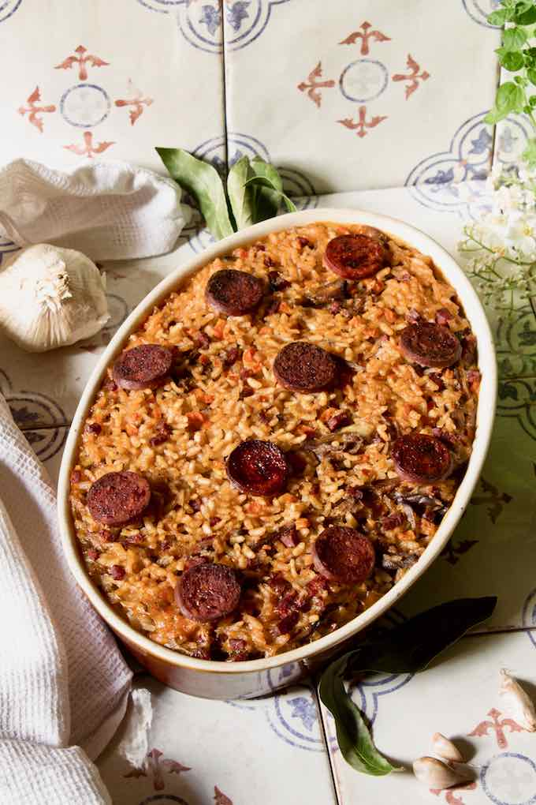

Arroz de Pato

Description
Arroz de pato is a delicious traditional dish from the Alentejo region of Portugal. It can literally be translated to "duck rice".
Ingredients
- 1 whole duck
- 1¼ cup extra long grain rice
- 2 onions
- 1 carrot , cut into very small cubes
- 3 cloves garlic , chopped
- 1 bay leaf
- ½ chouriço (Portuguese chorizo)
- ½ cup red wine
- 5 tablespoons olive oil
- Salt
- Pepper
Steps
- Place the duck in a pot. Add a half-onion, the bay leaf, red wine and a little salt.
- Cover with water and cook over medium heat for 1 hour 30 minutes, or, depending on the quality of the duck, until the meat begins to detach from the bones. If the cooking liquid evaporates too much, add boiling water.
- Remove the duck from the pot. Remove the skin and bones and chop the meat.
- Filter the cooking liquid and reserve it for cooking the rice.
- Finely chop the onion.
- Coarsely chop ¾ of the chorizo.
- In a large Dutch oven, heat the olive oil and sauté the onion, garlic, carrot and chopped chorizo.
- Sauté over medium heat until golden brown.
- Add the rice and fry for 1 minute, stirring constantly.
- Add 5 cups of reserved broth and cook for 10 minutes.
- Correct the seasoning if necessary.
- Add the meat and mix well.
- Preheat the oven to 350 F / 180 C.
- Pour the duck rice with the juice (if there is any left), in a large baking dish and smooth out the top.
- Garnish with the remaining chorizo slices and bake for 15 minutes or until the rice is golden brown.
- Serve very hot.